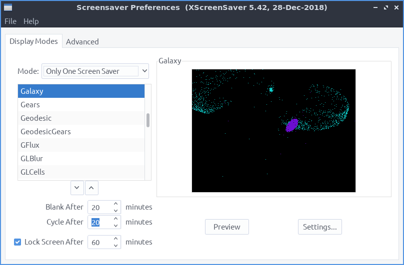
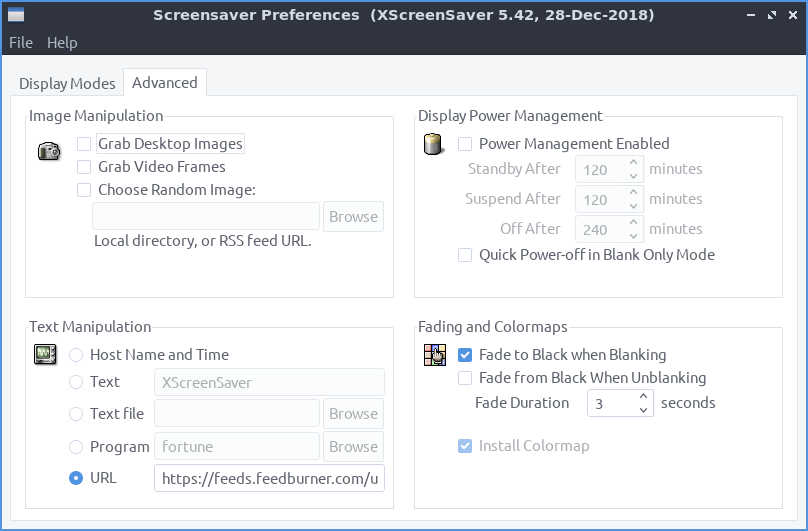

Chapter 3.2.19 Screensaver¶
Screensaver is an application to control what screensavers are used on the system and how long it takes to activate the screensaver.
Usage¶
The Mode drop down has 4 settings turns off the screensaver, just turns the screen itself off, sets one screensaver, and selects a random screensaver. If you selected to blank the screen change the Blank After field. If you have a random screensaver set you can change with the number of minutes it says with Cycle After for when the screensaver will change to another one. Check the checkbox for Lock Screen After takes the number of minutes to lock the screen and change minutes to change how soon to lock the screen.
To change your screensaver to a different screensaver left click on the name of the screensaver on the left hand side of the screen. You can see a small preview of the screensaver on the right hand side of the window.
If you try to select a screensaver that is not installed it will not show on the right hand side of the window. To preview a screensaver as when it would be activated press the Preview button. To see more settings for each individual screensaver press the Settings button.
To make the screen blank . To lock your Screen . If you want to kill the daemon . To restart the screensaver daemon . To restart xscreensaver .
If you try to open the screensaver settings without having the screensaver daemon running you will bring up a dialog if you want to launch it.
To change to get even more settings on your screensaver use the Advanced tab. To change images in your screensaver change settings in Image Manipulation heading.
To change turrning the screen off and if to enter standby or suspend use the settings in Display Power Management. To enable xscreensaver to have power management check the Power Management Enabled checkbox. To change how fast to turn the computer into standby change the Stanby After field. To change how fast to suspend when idle change the Suspend After field. To turn the monitor off after an amount of time change the Off After field. To turn the screen off when blanking the screen check the Quick Power-off in Blank Only Mode chackbox.
To change the settings for how to make your screen blank change the Blanking settings. To have your screen fade to black when blanking check the Fade to Black when Blanking checkbox. To have your screen fade back in from screen blanking check the Fade from Black When Unblanking. To change how fast your screen fades change the Fade Duration field.
Version¶
Denios-OS ships with version 6.02 of Screensaver
How to Launch¶
To launch Screensaver from the menu or run
xscreensaver-demo
from the command line. The icon for Screensaver looks like purple night picture of the sky at night.